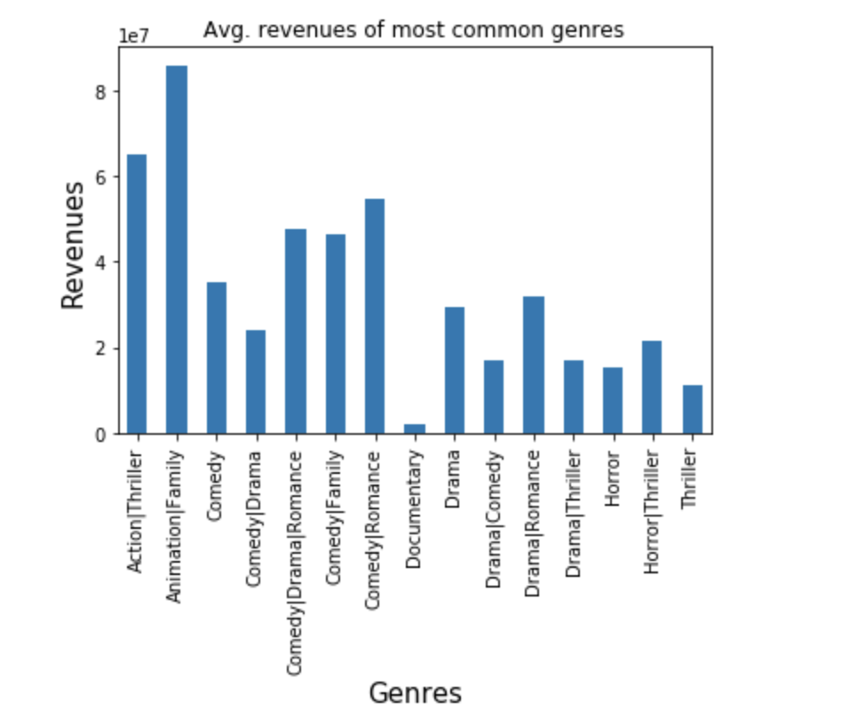

Personal/Learning projects

I have had the opportunity to explore distinct datasets while completing my Data Analyst nanodegree with Udacity along with other great courses on Edx, Coursera, Udemy and ICE. I will try to post them all here.
Projects
Explore Weather Trends
The introductory project required the manipulation of a relational database hosting world temperatures. At first the dataset was plotted as such and the resulting chart seemed volatile.
A second one was plotted using an average window of 20 years and compared with global temperatures
The notebook used can be found here. but here I have listed some good data source and competitions.
Factors influencing movie revenue and ratings
The dataset chosen was the TMDb movie data. The original collection holds detailed information of approximately 10,867 movies within 21 columns including information related to their casting, producer, budget, runtime, and so on. The properties contained in the dataset are quite diverse. Some of these variables are names (actors and producers names), others are ordinal data (ratings), sentences (tagline) and even paragraphs (overview). The data covers several decades, and it had the revenues of older years adjusted so as to be comparable to current ones. Questions that directed this introductory investigation were:
- How the runtime and budget influence the ratings a movie receives?
- How the runtime and budget influence the box office performance of a movie??
- Are the box office performance and the ratings related?

Conclusions and the whole analysis can be found here.